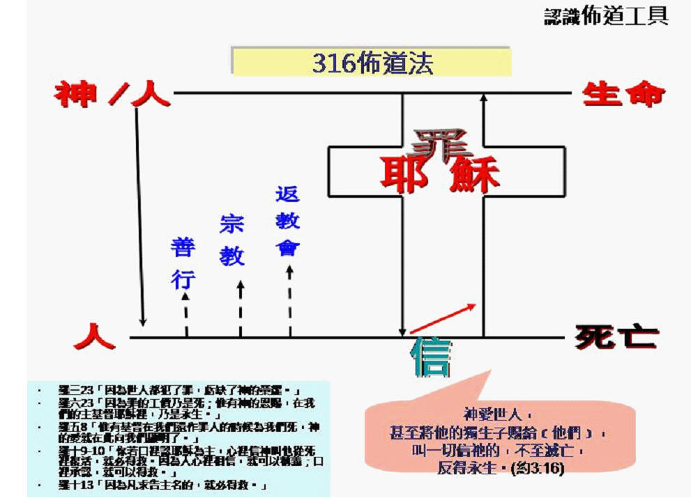
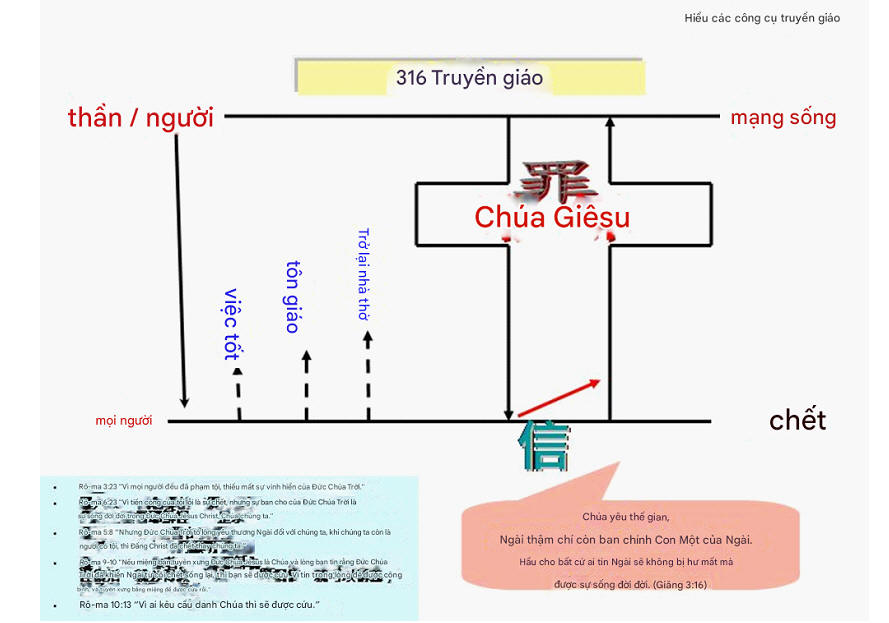
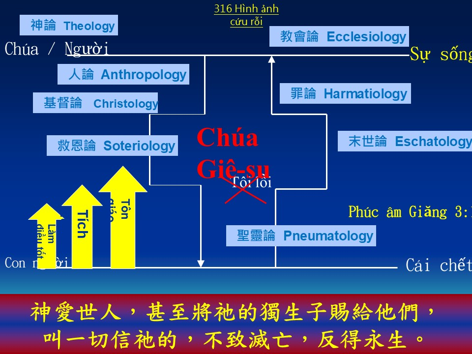
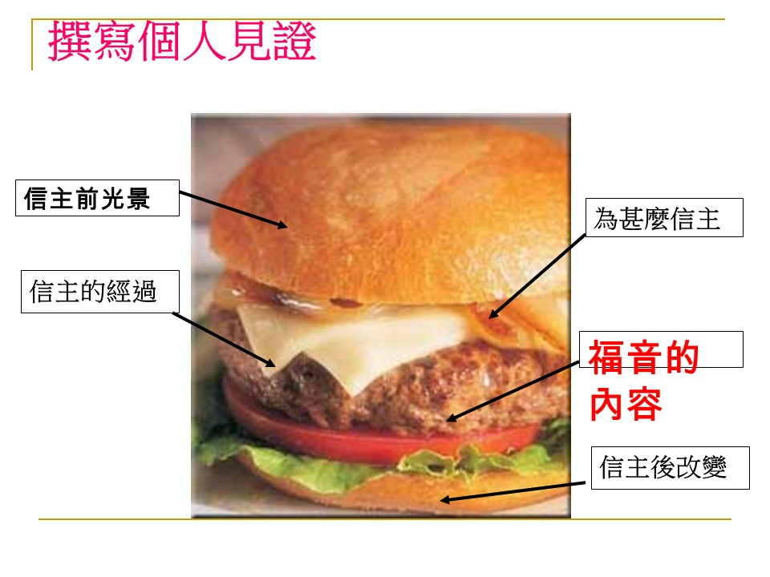
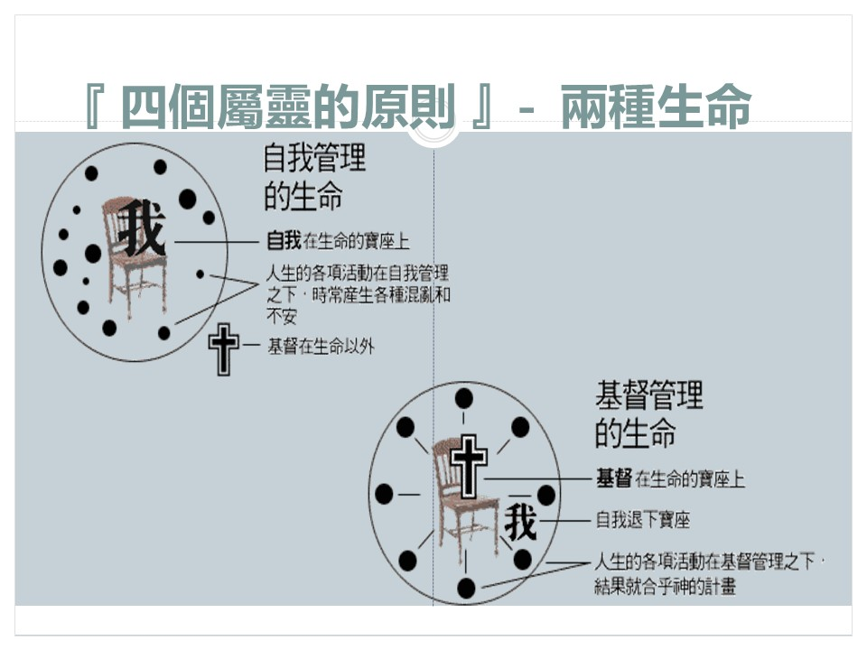
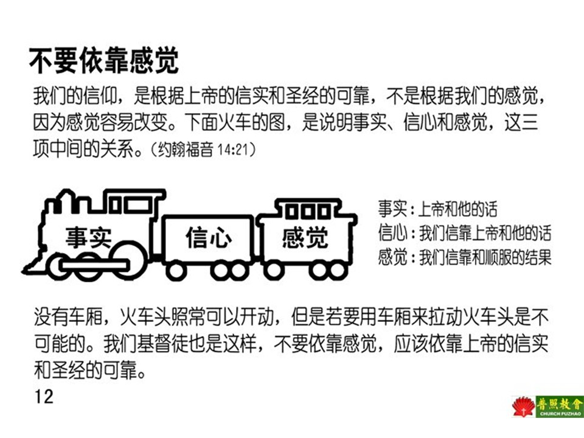

歡迎來到聖經百步信仰四寶學習平台
這是一個系統化的聖經學習平台，幫助您深入理解神的話語。
從左側選擇您想要學習的課程，開始您的信仰之旅。
📚 學習特色
- 系統化學習路徑
- 📖 舊約100步 + 新約100步
- 💎 信仰四寶核心課程
- 🔧 Microsoft FrontPage 兼容
這是一個系統化的聖經學習平台，幫助您深入理解神的話語。
從左側選擇您想要學習的課程，開始您的信仰之旅。
使用 AI 助手解答學習中的疑問，獲得個性化指導。
將聖經故事轉化為視覺圖像，加深理解和記憶。
|
動作 |
意義 |
福音進程 |
福音教導 |
經文運用 |
|
l 用一隻手（左手）比喻為神 |
神 |
有一位神 |
神的存在 |
創1:1 |
|
l 用另一隻手（右手）比喻為人。 |
人 |
人的存在 |
人的存在和過程，人與神的關係 |
|
|
l 左手升起，喻創造天地萬物。 l 右手升起，與左手相接，喻創造人。 |
神創造目的 |
神創造天和人 |
神當初造人是照祂的形象造的，祂賜人豐盛的生命。 l 祂沒有把人造成機械人，機械地去愛祂、順服祂。 l 祂給人自由的意志，可以自由選擇。 |
|
|
l 兩手相接，移向右方，喻人神同在，向著永生 |
人神永遠同在 |
神是愛 |
l 神愛你，祂要你擁有： l 平安和生命 -- 是豐盛而永遠的。 |
|
|
l 人（右手）因犯罪（拿起一本重量的書，罪書，或重物），降下，與神（左手）隔離，喻為犯罪沉淪。 l 右手下移向右方，喻走向滅亡，永死。 |
|
人犯罪 |
人(有罪)
|| l 我們選擇的結果是與神隔離 || 神(聖潔) l 我們最初選擇了背叛祂，偏行己路。今天，我們仍然選擇這修路，結果和神隔離了。聖經說... 「因為世人都犯了罪，虧缺了神的榮耀。」(羅 3:23) 「因為罪的工價乃是死；惟有神的恩賜，在我們的主基督耶穌裏，乃是永生。」(羅 6:23) 「但你們的罪孽使你們與神隔絕；你們的罪惡使他掩面不聽你們。」(賽 59:2) 「有一條路，人以為正，至終成為死亡之路。」(箴 14:12) |
羅 3:23 羅 6:23 賽 59:2 箴
14:12 |
|
l 下沉的手，向上提升，又降下，如此數次。 l 喻人要用自己方法，回到神那裡，都不可能。包括：善行，尋永生之道，修行 |
我們自己的嘗試. |
人靠自己 |
自古以來，人類想盡各種方法要架通這條鴻溝...結果都失敗了... l 善行，尋永生之道，修行等等， l 人(有罪) -> 善行，尋永生之道，修行<--- 神(聖潔) l 不得其法 「你們得救是本乎恩，也因著信，這並不是出於自己，乃是神所賜的，也不是出於行為，免得有人自誇。」(弗2:8-9) |
弗2:8-9 |
|
l 另一手（左手），開始向下，喻神愛人，派獨生子基督到世上來。 l 左手那起右手的重物，喻承擔人的罪。 |
唯一與神和好的步驟 |
神救贖 |
聖經說... l
「因為只 有一位神，在神和人中間，只有一位中保，乃是降世為人的基督耶穌。」(提前 2:5) l
「因基督也曾一次為罪受苦，就是義的代替不義的，為要引我們到神面前...。」(彼前 3:18) l
「惟有基督在我們還作罪人的時候為我們死，神的愛就在此向我們顯明了。」(羅 5:8) 「神愛世人，甚至將祂的獨生子賜給他們；叫一切信他的人不致滅亡，反得永生。」(約3:16) l 耶穌基督是解決這隔離問題的唯一答案。 l 祂死在十字架上，又從墳墓裏復活，償清了我們的罪債，架通了神人之間的鴻溝。 |
提前 2:5 彼前
3:18 羅 5:8 約3:16 |
|
l 左手（神）將重物拋去，喻神除去罪； l 兩手如空，伸展向兩旁，喻一十字架； |
神的救法：十字架 |
人相信就得救 |
神已經預備了這唯一的救法，人必須作個選擇，我們必須信靠耶穌基督，親自接受祂。 聖經說... 「看哪，我站在門外叩門，若有聽見我聲音就開門的，我要進到他那裏去，我與他，他與我一同坐席。」(啟 3:20) 「凡接待他的，就是信他名的人，他就賜他們權柄，作神的兒女。」(約 1:12) 「你若口裏認耶穌為主，心裏信神叫他從死裏復活，就必得救。」(羅 10:9) 你在這邊？ ←---------- -------→ 或在這邊？ 人基督神 罪赦免
悖逆平安 隔離 豐盛生命永生 |
啟 3:20 約 1:12 羅 10:9 |
|
l 左手（神）併向右手（人）向上提升，喻回到同一相親關係； l 兩手併合提升後，再移向右方，喻人神同在，走向永生。 |
信而得救 |
人認罪，接受耶穌作救主 |
現在，你還有什麼理由不接受耶穌基督？你只要： 1.
承認你的需要(我是罪人)。 2.
願意轉離你的罪(悔改)。 3.
相信耶穌基督在十字架上為你死，並為你從墳墓中復活。 4. 借著禱告，請耶穌基督進入並掌管你的生命(接受祂作救主，並奉祂為主)。 |
|
|
|
|
|
|
|
|
詢問： １． 你現時信仰在那階段。 ２．
你願意信耶穌嗎？ ３．
你願意決志禱告嗎？ 決志，認罪禱告 |
我們的回應： 接受基督 |
認罪禱告 |
親愛的主耶穌： l 我知道我是個罪人，需要你的赦免， l 我相信你為我的罪而死，我要離開罪惡。 l 現在請你進入我的心和我的生命中，我要接受你作我的救主。 l 我要奉你為我的主，跟從你，並加入教會的團契生活。 神的保證 祂的話語：如果你這樣禱告，聖經說... 你是否誠心請耶穌基督進入你的生命中？ 現在祂在何處？ 祂已經給予你什麼？ 「你們得救是本乎恩，也因著信，這並不是出於自己，乃是神所賜的，也不是出於行為，免得有人自誇。」(弗2:8-9) |
羅
10:13 弗2:8-9 |
|
|
|
|
|
|
|
簡介作為信耶穌的人的生命與生活 |
作神兒女 |
作神兒女 |
聖經說...： 「人有了神的兒子，就有生命，沒有神的兒子就沒有生命。我將這些話寫給你們信奉神兒子之名的人，要叫你們知道自己有永生。」(約一5:12-13) l 當我們接受基督，透過聖靈在每一個信徒身上的超自然作為，使我們成為神的兒女，這就是重生。 l 這只是在基督裏的新生命之開端。 |
約一5:12-13 |
|
|
歸入教會 |
進入神的家 |
要建立這種新生命，你必須： １．
天天讀聖經，更進一步認識基督。 ２．
天天禱告，和神交談。 ３．
把基督介紹給別人。 ４．
加入傳揚基督的教會，和其他基督一起崇拜、團契和事奉。 ５．
在這個饑渴的世代，作基督的代表，借著你對人的愛和關懷，表明你的新生命。 願神賜福給你 |
|
|
|
|
即時栽培 |
1. 神的家歡迎你（以行動表示，如握握手等……） 你已是神的兒女──約1:12“凡接待祂的，就是信祂名的人，祂就賜他們權柄，作神的兒女。” 2. 簽署屬靈生日卡（可自製小卡送給他作紀念） 3. 介紹靈命成長的途徑 讀經、禱告、參加教會聚會（敬拜、團契）、見證 4. 預告轉介（如有需要） |
約1:12 |
|
|
|
|
|
|


★
For God so loved the world, that He gave His only begotten
Son,
that whoever believes in Him will not perish, but have
everlasting life.



Vì Đức Chúa Trời yêu thương thế gian - Search
|
|
|
|
Vì Đức Chúa Trời
yêu thương thế gian |
For God so loved the world God so loved the world That He gave His only begotten Son Jesus, that whosoever believeth Whosoever believeth, whosoever believeth in Him Shall never perish Shall never perish But have life Have life, everlasting life Amen. |
https://www.thanhnientinlanh.org/sheets2173-chua-yeu-the-gian-thanh-ca-pdf.html

福音橋 Gospel Bridge - Search Images
羅6:23
Romans 6:23
四个属灵定律

https://public.websites.umich.edu/~mpactmov/4laws.htm

https://campusministry.org/docs/tools/FourSpiritualLaws.pdf

Wordless Book


https://www.slideshare.net/slideshow/316-64611261/64611261#12
https://lts33.net/elearn/servlet/elearn.Awless?lsref=LS000007397


https://site1.cclife.org/View/Article/9696
https://www.youtube.com/watch?v=EybfgM7cwvs
一节经文照亮通往天堂的道路!


https://youtu.be/7gr0xXfR3L8 The Bridge Gospel Illustratio

十字传讲好消息
https://www.hoc6.org/global/2021/05/02/10-words-25-mins-gospel-demo-jerry/
https://youtu.be/YQA3qMLs1b0?list=PLi5apS71jX3AH3Zmn_4YuYgrJsKH7R5Ut
「五」，最常用的就是「五色珠」(不是五分珠喔)。運用有順序的五個顏色，把救恩的精華串起來。這是一種簡單易記，收錄在手機裡面，隨時可以拿出來跟朋友談信仰的一個好工具。

https://drupalbible.org/node/134
https://youtu.be/fR5dP17uHuY
五色的奧秘
https://youtu.be/-V3XudvPP7Y
五色佈道法
「五」，是「五指佈道法」。拿自己的手指來傳福音，更是簡單直接。這一套佈道法的有趣之點，在每一隻手指頭的故事講完，都會有一個「轉接句」，讓講的人可以順著這個邏輯講到下一個手指的故事。

https://drupalbible.org/node/134
https://youtu.be/KXAAdocRf8o 用五指布道法传福音
罗马路手图（见下页图）
用每只手指代表一个重点：
1. 母指：人的问题。
2. 食指：神的慈爱。
3. 中指：你的选择。
4. 无名指：如何相信？
5. 小指：行动的表示。

https://lts33.net/elearn/servlet/elearn.Awless?lsref=LS000007397
https://youtu.be/DML5IxpKJX8
羅馬書佈道法
「四」。這個算是蠻老牌子的「四律」了。過去都是拿一本小冊子，跟對談者翻著翻者，就把四個原則講完，然後帶領決志。

https://youtu.be/bnJ6PyesN-I 福音沙畫：四個屬靈的定律 - 如何與神建立關係
https://youtu.be/-KZkOs6ScO4 四個屬靈的原則

http://www.ee3.org.hk/training/storyw.htm
【創1:1】 起初神創造天地。
【羅1:19】 神的事情，人所能知道的，原顯明在人心裏。因為神已經給他們顯明。
【羅1:20】 自從造天地以來，神的永能和神性是明明可知的，雖是眼不能見，但借著所造之物，就可以曉得，叫人無可推諉。
【約17:3】 認識你獨一的真神，並且認識你所差來的耶穌基督，這就是永生。
【太1:21】 她將要生一個兒子。你要給他起名叫耶穌。因他要將自己的百姓從罪惡裏救出來。
【提前1:15】 基督耶穌降世，為要拯救罪人。這話是可信的，是十分可佩服的。在罪人中我是個罪魁。
【約14:6】 耶穌說，我就是道路，真理，生命。若不借著我。沒有人能到父那裏去。
【羅3:23】 因為世人都犯了罪，虧缺了神的榮耀。
【雅2:10】 因為凡遵守全律法的，只在一條上跌倒，他就是犯了眾條。
【耶17:9】 人心比萬物都詭詐，壞到極處，誰能識透呢？
【創1:26】神說，我們要照著我們的形像，按著我們的樣式造人，使他們管理海裏的魚，空中的鳥，地上的牲畜，和全地，並地上所爬的一切昆蟲。
【創1:27】 神就照著自己的形像造人，乃是照著他的形像造男造女。
【賽43:7】 就是凡稱為我名下的人，是我為自己的榮耀創造的，是我所作成，所造作的。
【羅7:18】 我也知道，在我裏頭，就是我肉體之中，沒有良善。因為立志為善由得我，只是行出來由不得我。
【羅7:19】 故此，我所願意的善，我反不作。我所不願意的惡，我倒去作。
【加3:11】 沒有一個人靠著律法在神面前稱義，這是明顯的。因為經上說，義人必因信得生。
【羅6:23】 因為罪的工價乃是死。惟有神的恩賜，在我們的主基督耶穌裏乃是永生。
【來9:27】 按著定命，人人都有一死，死後且有審判。
【啟20:15】 若有人名字沒記在生命冊上，他就被扔在火湖裏。
【可9:48】 在那裏蟲是不死的，火是不滅的。
【約3:16】 神愛世人，甚至將他的獨生子賜給他們，叫一切信他的，不至滅亡，反得永生。
【羅5:6】 因我們還軟弱的時候，基督就按所定的日期為罪人死。
【羅5:7】 為義人死，是少有的，為仁人死，或者有敢作的。
【羅5:8】 惟有基督在我們還作罪人的時候為我們死，神的愛就在此向我們顯明了。
【路19:10】 人子來，為要尋找拯救失喪的人。
【太20:28】 正如人子來，不是要受人的服事，乃是要服事人。並且要捨命，作多人的贖價。
【約14:6】 耶穌說，我就是道路，真理，生命。若不借著我。沒有人能到父那裏去。
【徒4:12】 除他以外，別無拯救。因為在天下人間，沒有賜下別的名，我們可以靠著得救。
【提前2:5】 因為只有一位神，在神和人中間，只有一位中保，乃是降世為人的基督耶穌。
【賽1:18】 耶和華說，你們來，我們彼此辯論。你們的罪雖像朱紅，必變成雪白。雖紅如丹顏，必白如羊毛。
【約一1:7~9】我們若在光明中行，如同神在光明中，就彼此相交，他兒子耶穌的血也洗淨我們一切的罪。我們若說自己無罪，便是自欺，真理不在我們心裏了。我們若認自己的罪，神是信實的，是公義的，必要赦免我們的罪，洗淨我們一切的不義。
【羅10:9】 你若口裏認耶穌為主，心裏信神叫他從死裏復活，就必得救。
【約1:12】 凡接待他的，就是信他名的人，他就賜他們權柄，作神的兒女。
【約一5:11~13】這見證，就是神賜給我們永生，這永生也是在他兒子裏面。人有了神的兒子就有生命。沒有神的兒子就沒有生命。我將這些話寫給你們信奉神兒子之名的人，要叫你們知道自己有永生。
【徒3:19】 所以你們當悔改歸正，使你們的罪得以塗抹，這樣，那安舒的日子，就必從主面前來到。
【徒26:18】我差你到他們那裏去，要叫他們的眼睛得開，從黑暗中歸向光明，從撒但權下歸向神。又因信我，得蒙赦罪，和一切成聖的人同得基業。
【約3:5】 耶穌說，我實實在在地告訴你，人若不是從水和聖靈生的，就不能進神的國。
【彼前1:23】 你們蒙了重生，不是由於能壞的種子，乃是由於不能壞的種子，是借著神活潑常存的道。
【太10:32~33】凡在人面前認我的，我在我天上的父面前，也必認他。凡在人面前不認我的，我在我天上的父面前，也必不認他。
【羅10:13】 因為凡求告主名的，就必得救。
【約3:18】 信他的人，不被定罪。不信的人，罪已經定了，因為他不信神獨生子的名。
【林後6:2】因為他說，在悅納的時候，我應允了你。在拯救的日子，我搭救了你。看哪，現在正是悅納的時候，現在正是拯救的日子。
【賽55:6】 當趁耶和華可尋找的時候尋找他，相近的時候求告他。
【約10:28~29】我又賜給他們永生。他們永不滅亡，誰也不能從我手裏把他們奪去。我父把羊賜給我，他比萬有都大。誰也不能從我父手裏把他們奪去。
【來7:25】 凡靠著他進到神面前的人，他都能拯救到底。因為他是長遠活著，替他們祈求。
接受耶穌，就像 A-B-C 一樣簡單
C 委身 (Commit)
於跟隨耶穌，完全信靠祂，將主權交給祂，讓祂成為你生命的主宰。
簡單的回答以下的問題；然後用以下來的大綱來完成您的見證。
-在您成為基督徒之前，您的生活是怎樣的？
-您的一些行動、態度及思想是怎樣的？
-請舉一些例子。
（請清楚列舉，但避免用詞繁瑣）：
-您第一次是如何聽到有關耶穌基督的事情？
-您的第一印象是怎樣的呢？
-您的態度是否是戲劇型的改變了呢？如果是的話，為什麼？
（強調您個人見證的這一部份，請注意作為一個誠摯的基督徒，也要面對一些問題的）：
-在這一部份所列的行動、態度及思想有了些什麼樣的改變？它們是怎樣改變的？
-在您生活中 神已完全改掉您一些問題嗎？如果是，它們是那一些問題？
-您能否舉一些例證來說明 神已經在您生命中的作為？
-下列所舉事項中請選出一些您認為是很重要必須與他人分享的：
上帝的愛
生存的目標
上帝的赦罪 對生活的恐懼得釋放
生命的充實 對他人的恐懼得釋放 其他信徒的友善相待 上帝話語的直接安慰
心靈裏的平安 內在的力量
成為上帝家中的一員 歸屬感
對生命的新盼望 對他人的關懷
對死亡的懼怕得著釋放
上帝在學業上、婚姻當中的幫助等等
永生的確據 其它的
1 避免用基督教的術語，如寶血、重生等
2 避免批評其他宗教，團體和別人
3 避免用「我們」，要用「我」
4 避免講真實姓名，觸犯私隠
5 不可作假見證，或過份誇大和言過其實
6 避免教訓或指責語句
7 避免太注重理論
1. 一對一的個人佈道。
2. 個人的談話。
3. 著重訓練與行動。
4. 福音的內容因應個別的差異去傳講。
5. 多次持續接觸未信者。
6. 使人成為主的門徒。
ａ. 「整體的福音工作是個人佈道的基礎」
教會的整體福音工作會直接影響個人佈道的成果，如果教會的見證好，個人佈道也會有美好的收成（徒２：４１﹣４７）。
ｂ. 「信徒向未信者傳福音應該是在世界裡，而不是在教會裡」
教會不應該單單叫人來教會聽福音，因為未信者到教會是較為困難的，教會應出去，進到人群當中，把福音傳給他們。耶路撒冷教會就是因為逼迫的原故，分散到世界各地傳福音，結果福音就傳遍了地極。
ｃ. 「傳福音的對象應該是成人，進而是全家」。
在新約中，看見信主的多數是成年人，進而是全家，例如哥尼流，呂底亞等。向成年人傳福音是最有果效的方法，因為成年人如父母，他們會較為容易影響子女信主。
ａ. 尼哥底母（約３：１﹣２１）
尼哥底母是知識份子，對聖經很熟識，耶穌傳福音的方法是單刀直入，切中問題。尼哥底母當時沒有信主，但後來成為耶穌的信徒。
ｂ. 撒該（路１９：１﹣１０）
撒該是個很富有的稅吏長，當耶穌經過耶利哥的時候，由於他渴望看見耶穌，耶穌就主動與他接觸。因為撒該是個不受歡迎的人物，所以耶穌到他的家，表示接納他，同時有機會幫助他知罪悔改，撒該因此而得救。
ｃ. 撒瑪利亞婦人（約４：１﹣４２）
l
ａ. 找同性別的人：
因為是單對單的傳福音，所以在許可的情況之下，最好找同性別的人傳福音。避免不必要的猜疑或鑑戒。
l
ｂ. 年齡相近的人：
年齡相近的好處是思想，喜好會較為相近，談起話來會較有共鳴，關係較為容易建立，對傳福音有幫助。
l
ｃ. 單獨的個人對個人：
個人佈道的好處，在於針對個別的需要，因應個別的情況傳福音，以至達到傳福音理想的果效。
l
ｄ. 倚靠聖靈和神的話語：
叫人信主是聖靈和神話語的工作，我們只是神的器皿，所以要時常禱告，倚靠神去傳福音。
l
ｅ. 保持談話的中心：
不可偏離福音的內容，也不可讓對方帶離談話的中心，否則便不能順利的講完福音，影響了傳福音的果效。
l
ｆ. 有禮貌和機敏：
即使對方有不同的看法，或拒絕福音，也不要和對方激辨，總要保存溫柔的心，靈敏的回應對方的問題（彼前３：１５）。
l
ｇ. 想辦法把對方帶到主的面前：
個人佈道最終的目的是領人到主的面前，所以最後必需鼓勵對方決志相信耶穌，接受耶穌作救主和生命的主。
l
ｈ. 立刻跟進：
在初信者信主後的２４小時內要作即時的跟進工作，邀約參加教會的聚會，探訪他，與他建立關係，栽培他在主內成長，這樣才是成功完滿的個人佈道。
當我們愛神的時候，就會遵守主的命令去傳福音，因此，愛神的心是我們傳福音的動力。
效法保羅愛同胞的心，才會不惜代價的把福音傳開去。
1. 單刀直入的向對方傳福音。
2. 傳講者主導整個傳講的過程。
3. 一次過向未信者傳福音。
4. 傳講者與未信者並不是朋友的關係，在對象決志後不容易跟進。
5. 注重傳福音的行動，和由傳道人帶領信徒傳福音，所以較容易實踐。
1. 先與對方建立友誼，然後藉著機會與對方討論福音的話題。
2. 雙方的討論，互相探討福音的問題。
3. 多次與未信者接觸。
4. 傳講者與未信者是朋友，所以較容易跟進。
5. 因信徒只注重建立友誼而忽略了傳福音的工作。
1. 訓練：個人佈道必需經過訓練，信徒才曉得如何作個人佈道。
2. 對象：要注意誰是好土，好好的為對象禱告。
3. 地點：按著不同的需要選擇合適地點作佈道。
4. 工具：預備合適的工具如聖經，單張，紙筆等。
ａ. 對方的日常生活。
ｂ. 對方的信仰。
ｃ. 對方對我們教會的印象。
ｄ. 個人見證或教會的見證。
ｅ. 問兩個診斷性的問題：
l
i.「假如你今天晚上離開世界，按照你現在的信仰或思想，是否肯定自己可以上天堂？」，
「可否讓我和你分享，我是怎樣知道自己有永生，而你也同樣可以得到。」（不要提到「神」「耶穌」或「聖經」等屬靈詞語，免得對方重覆答案）
l
ii.「假如你今天晚上離開這個世界，來到神的面前，神問你，為什麼我要讓你進入我的天堂？
你會怎樣回答？」，
「讓我確定是否了解你的意思，你說．．．（覆述他的答案）」，
「你的意思是這樣的嗎？當我們開始交談的時候，我就想我有一個好消息告訴您，現在聽你這麼說，我可以肯定這是你平生以來所聽見一個最好的消
息。過去我的想法和你一樣，以為人若憑．．．（覆述對方的答案）就可以上天堂，但後來我得知這個好消息，才驚覺的發現，原來天堂是一分免費的禮物。」
ａ. 恩典：天堂是恩典（弗２：８）
ｂ. 罪：1.人是罪人（羅３：２３） 2. 不可以自己救自己。
ｃ. 神：
1.是慈愛的（耶３１：３）所以不願意懲罰我們。
2. 神是公義的（出２０：５）必追討人的罪
ｄ. 基督：
1.（腓２：６﹣７）基督的身份是完全的神和完全的人。
2. 基督的工作：為我們死，付上贖罪的代價，為我們復活，預備天堂給我們。
ｅ. 信心：信心不單是理性的同意或單靠今生的信心。乃是單信耶穌基督而得永生。
問他是否願意接受這永生的禮物，解釋決志的意思，是單信耶穌基督得永生，接受耶穌是復活和永活的主，接受耶穌作救主，（啟３：２０）要悔改，願意離開罪惡，讓耶穌掌管生活。
ａ. 與對方有社交來往，如探訪，邀請參加教會的聚會。
ｂ. 與對方建立一些共同的興趣。為對方禱告。
ａ．替自己找出對方的問題，在平常的接觸中，透過交談找出對方的心事，或對信仰的疑難，主動的提出，引領對方去面對。
ｂ．是替對方找出自己的問題，在日常的生活中，可以藉著一些新聞，單張，書籍等幫助對方思想福音，引導他正視生命的問題。
3. 如何向對方講福音：
ａ. 對福音漠不關心的人：（約３：１６）
ｂ. 對故意拖延的人：（雅４：１３﹣１４）
ｃ. 對自以為義的人：（羅３：２３）
ｄ. 對不願離開罪惡的人：（加６：７﹣８）
ｅ. 對不信神存在的人：（羅１：２０）
ｆ. 對有痛苦問題的人：（創３章）
从普通谈话转为福音分享，最容易及最有效的方法，就是提出一些启发性的问题。目的是：
1．引起对方思想与讨论的兴趣。
2．探索对方对救恩的认识。
3．除去对方的自满、自信与自足。
1．决定你能否引人深思。
2．决定讨论的方向。
3．决定谈道的成功与失畋。
下面提供一些问题，其中以头三个问题特别富启发性，若在适当时候提出，有助谈道者引入福音话题。
你觉得宇宙中可能有神的存在吗?
注意：
１． 这是最常用，最有效，而且应是最先提出的问题(除了特殊情况。例如：没有兴趣讨论的老年人)。可促进讨论气氛，并消除现代青年人抗拒福音的态度。
２． 这问题不是：『你信不信有神?』也不是：『你对神的看法怎样?』前者不能促进讨论。无论对方叫答『信』或『不信』，都无法客观地进一步讨论。第二个问题则太广泛，不容易摸着边际，结果也无从讨论。
３． 若问：『可能有神存在吗?』对方答道：『不可能。』我们就可进一步的问：『你认为百分之一百不可能有神的存在吗?』于是我们可以指出，古今中外没有人可以说他已经百分之一百确定宇宙没有神的存在。对方若回答：『可能。』我们就可以问：『为什么你觉得有神存在的可能呢? 』接着就与他交换意见，客观讨论，使对方找到真神。
假定世界有神的存在，有天堂与地狱的存在，按照天堂地狱的定义，可以进一步假定，你与我都不想下地狱。假定有一天，你与我都离开世界，去到天堂门口，神站在天堂门口问你：“我为什么要让你进人天堂？”你会怎样回答呢?
注意：
１． 这问题个基于假设，目的是避免争论。对方若抗议，认为假定不确定，我们可以回答：『当然，我们也可以假定没有神，没有天堂与地狱的存在。这假设若是真实，一切宗教显然都足虚假，所有的宗教讨论都没有价值。
２． 以上的假设，有助意见交换，促进讨论。
３． 千万不要说：『假定你今天死掉。』多半中国同胞对这话会反感的。
４． 3．『你想你是否会进天堂?』这问题则太主观，不易客观讨论。
５． 对这问题，许多的非信徒会间答：『我已尽力做好人。』『如果神造了我，就—定得让我进去。』这样我们可趁着机会出对方的错误并解明福音。
６． 这问题有探索的作用，因为从对方的回答，我们可以明白他的想法。
『你能否百分之一百肯定有—天你离开世界时，会往哪里去?』
注意：
１． 不是问『你今天若死去，会到天堂还是地狱? 』
２． 不是问『你想你百分之一百会去哪里?』
３． 不是问『你能否肯定百分之一百会去天堂?』
４． 这问题不适用于对福音没有好感的人，因为他们会答：『管它呢，我肯定会下地狱的!』
1、你认为基督徒是怎样的人?应该避免下列问题：
a．你对基督徒有什么看法?
b．基督教是什么?
c．你对我们教会或基督教印象如何?
d．你是否基督徒?
2、你认为圣经的中心思想是什么?
注意，并不是问：
a．你知道圣经讲些什么吗?
b．你对圣经的看法及印象怎样?
c．你明白圣经的内容吗?
d．你信不信圣经?
3、你知道耶稣说自己是谁吗?
我们不是问：
a．你觉得耶稣是谁?
b．你相信耶稣吗?
c．你对耶稣有什么看法?
4、世界上有各种不同的宗教，你有没有兴趣思想及讨论哪一个宗教所信的神才是真的?
5、你有没有兴趣思想，圣经是否值得我们相信?
6、进化论及创造论，哪一个值得相信?
7、谁创造神呢?
【For God so loved the world】For God so loved
the world, that He gave His only begotten Son, that whoever believes in Him
will not perish, but have everlasting life.
《神愛世人》神愛世人，甚至將他的獨生子賜給他們，叫一切信他的不致滅亡，反得永生。約翰福音 3:16
【Vì Đức Chúa Trời yêu thương thế gian】Vì Đức Chúa Trời yêu thương thế gian, đến nỗi
đã ban Con một của Ngài, hầu cho hễ ai tin Con ấy không bị hư mất mà được sự sống
đời đời. (Gi 3:16)
|
动作 Động Tác |
意义 Ý Nghĩa |
福音进程 Tiến Trình Phước Âm |
福音教导 Sự Dạy Dỗ Về Phước Âm |
经文运用 KT vận Dụng |
|
用一只手（左手）比喻为神 Chỉ dùng một tay ( tay trái) Ví dụ về ĐCT |
神 Đức Chúa Trời ( ĐCT) |
有一位神 There is a
God Có một ĐCT |
神的存在 Sự tồn tại của ĐCT |
创1:1 Sáng 1:1 |
|
用另一只手（右手）比喻为人。Chỉ dùng một tay
( tay phải) Ví dụ về người |
人 Người |
人的存在 There is Man Sự tồn tại của người |
人的存在和过程，人与神的关系 Sự tồn tại và quá trình của con người, quan hệ
giữa người và ĐCT |
|
|
左手升起，喻创造天地万物。 Tay trái giơ lên ví như việc tạo dựng trời đất
muôn vật. 右手升起，与左手相接，喻创造人。 Tay phải giơ lên nối với tay trái ví như tạo
dựng con người. |
神创造目的 Mục đích sáng tạo của ĐCT |
神创造天和人 God Created
The world and Man ĐCT tạo dựng trời đất và người |
神当初造人是照祂的形象造的，祂赐人丰盛的生命。 Ban đầu Đức Chúa Trời tạo dựng con người theo
hình ảnh Ngài , và Ngài ban cho con người sự sống dư dật. 祂没有把人造成机械人，机械地去爱祂、顺服祂。Ngài không tạo dựng con người thành người máy , để yêu và vâng phục Ngài một cách máy móc. 祂给人自由的意志，可以自由选择。Ngài ban cho con người ý chí tự do , có thế tự do
lựa chọn |
|
|
两手相接，移向右方，喻人神同在，向着永生 Hai bàn tay liền lại và di về bên phải, ví dụ cho sự ở cùng của ĐCT và hướng tới sự sống đời đời. |
人神永远同在 Con người ở cùng ĐCT đời đời |
神是爱 God love Man
with good Relationship and have eternal life. ĐCT là yêu |
神爱你，祂要你拥有：ĐCT yêu bạn và Ngài muốn bạn có được: 平安和生命 -- 是丰盛而永远的。Bình an và sự sống – phải dư dật mà còn đời đời |
|
|
人（右手）因犯罪（拿起一本重量的书，罪书，或重物），降下，与神（左手）隔离，喻为犯罪沉沦。 Con người (tay phải) vì phạm tội (tay trái) do tội
lỗi (cầm một cuốn sách nặng, cuốn sách tội lỗi, hoặc một vật nặng), giáng xuống, Bị xa cách với ĐCT ( tay Trái) ẩn dụ là vì tội lỗi mà diệt vong. 右手下移向右方，喻走向灭亡，永死。 |
|
人犯罪 Man sin against
God and fall away from God Con người phạm tội |
人(有罪) || Con người ( có tội) 我们选择的结果是与神隔离 || 神(圣洁) Kết quả lựa chọn của chúng ta là xa cách ĐCT ||
ĐCT (thánh khiết ) 我们最初选择了背叛祂，偏行己路。今天，我们仍然选择这修路，结果和神隔离了。圣经说... Ban đầu chúng ta chọn bội nghịch Ngài, đi theo con đường riêng của mình. Ngày nay, chúng ta vẫn chọn con đường này, và kết quả là chúng ta bị
xa cách ĐCT. Kinh thánh nói rằng: 「因为世人都犯了罪，亏缺了神的荣耀。」(罗 3:23) vì mọi người đều đã phạm tội, thiếu mất sự
vinh hiển của Đức Chúa Trời, (Ro 3:23) 「因为罪的工价乃是死；惟有神的恩赐，在我们的主基督耶稣里，乃是永生。」(罗 6:23) Vì tiền công của tội lỗi là sự chết; nhưng sự
ban cho của Đức Chúa Trời là sự sống đời đời trong Đức Chúa Jêsus Christ,
Chúa chúng ta. (Ro 6:23) 「但你们的罪孽使你们与神隔绝；你们的罪恶使他掩面不听你们。」(赛 59:2) Nhưng ấy
là sự gian ác các ngươi làm xa cách mình với Đức Chúa Trời; và tội lỗi các
ngươi đã che khuất mặt Ngài khỏi các ngươi, đến nỗi Ngài không nghe các ngươi
nữa. (Es 59:2) 「有一条路，人以为正，至终成为死亡之路。」(箴 14:12) Có một con đường coi dường chánh đáng cho loài
người; Nhưng đến cuối cùng nó thành ra nẻo sự chết. (Ch 14:12) |
罗 Rô-ma 3:23 罗Rô-ma 6:23 赛 Ê-sai 59:2 箴 Châm ngôn 14:12 |
|
下沉的手，向上提升，又降下，如此数次。 Bàn tay trầm xuống, nâng lên , rồi trầm xuống, như vậy nhiều lần. 喻人要用自己方法，回到神那里，都不可能。包括：善行，寻永生之道，修行 Ví là con người không thể dùng phương pháp riêng của mình để trở về với ĐCT. Bao gồm: việc lành, tìm lối sống đời đời , tu hành |
我们自己的尝试. Chúng ta tự mình thử lấy |
人靠自己 Man want to
go back to God with his own way. Nhờ cậy sức mình |
自古以来，人类想尽各种方法要架通这条鸿沟...结果都失败了... Từ xa xưa đến nay, con người đã thử nhiều
phương pháp khác nhau để nối thông khoảng cách này... nhưng đều thất bại. 善行，寻永生之道，修行等等，Làm lành, tìm lối sống đời đời, tu hành 人(有罪) -> 善行，寻永生之道，修行<--- 神(圣洁) Người (có tội ) > làm lành, tìm lối sống đời
đời, tu hành< ĐCT ( Thánh Khiết) 不得其法 Không tìm được cách nào là phải 「你们得救是本乎恩，也因着信，这并不是出于自己，乃是神所赐的，也不是出于行为，免得有人自夸。」(弗2:8-9) Vả, ấy là nhờ ân điển, bởi đức tin, mà anh em
được cứu, điều đó không phải đến từ anh em, bèn là sự ban cho của Đức Chúa Trời.
Ấy chẳng phải bởi việc làm đâu, hầu cho không ai khoe mình; (Eph 2:8,9) |
弗Ê-phê-sô 2:8-9 |
|
另一手（左手），开始向下，喻神爱人，派独生子基督到世上来。 Tay
cò lại
(tay trái) bắt đầu hạ xuống phía dưới, ví như ĐCT yêu nhân loại và sai Con Một của
Ngài là Chúa Giê-su Christ đến trần gian. 左手那起右手的重物，喻承担人的罪。 Tay trái nhấc lấy vật nặng của tay phải, ví cho việc gánh lấy tội lỗi của
con người. |
唯一与神和好的步骤 Những bước duy nhất để hòa thuận với ĐCT |
神救赎 Only one way, God descend to man , dead in the cross for man’s sin. (John 3:16) ĐCT cứu chuộc |
圣经说...Kinh Thánh nói rằng... 「因为只 有一位神，在神和人中间，只有一位中保，乃是降世为人的基督耶稣。」(提前 2:5) Vì chỉ có một Đức Chúa Trời, và
chỉ có một Đấng Trung bảo ở giữa Đức Chúa Trời và loài người, tức là Đức Chúa
Jêsus Christ, là người; (1Ti 2:5) 「因基督也曾一次为罪受苦，就是义的代替不义的，为要引我们到神面前...。」(彼前 3:18) Vả, Đấng Christ cũng vì tội lỗi chịu chết một lần, là Đấng công bình
thay cho kẻ không công bình, để dẫn chúng ta đến cùng Đức Chúa Trời; về phần xác
thịt thì Ngài đã chịu chết, nhưng về phần linh hồn thì được sống. (1Phi 3:18) 「惟有基督在我们还作罪人的时候为我们死，神的爱就在此向我们显明了。」(罗 5:8) Nhưng Đức Chúa Trời tỏ lòng yêu thương Ngài đối với chúng ta, khi
chúng ta còn là người có tội, thì Đấng Christ vì chúng ta chịu chết. (Ro 5:8) 「神爱世人，甚至将祂的独生子赐给他们；叫一切信他的人不致灭亡，反得永生。」(约3:16) Vì Đức Chúa Trời yêu thương thế gian, đến nỗi
đã ban Con một của Ngài, hầu cho hễ ai tin Con ấy không bị hư mất mà được sự
sống đời đời. (Gi 3:16) 耶稣基督是解决这隔离问题的唯一答案。 祂死在十字架上，又从坟墓里复活，偿清了我们的罪债，架通了神人之间的鸿沟。 |
提前 I Ti-mô-thê 2:5 彼前 1 Phi-e-rơ 3:18 罗Rô-ma 5:8 约Giăng 3:16 |
|
左手（神）将重物抛去，喻神除去罪； Tay
trái (ĐCT) Vứt bỏ vật nặng đi, ví cho việc Chúa xóa bỏ tội lỗi; 两手如空，伸展向两旁，喻一十字架； Hai tay để trống, dang rộng sang hai bên , ví cho hình chữ thập; |
神的救法：十字架 Cách cứu chuộc của ĐCT: Thập tự giá |
人相信就得救 Man can only
be save through God’s love Con người tin thì được cứu |
神已经预备了这唯一的救法，人必须作个选择，我们必须信靠耶稣基督，亲自接受祂。 圣经说... 「看哪，我站在门外叩门，若有听见我声音就开门的，我要进到他那里去，我与他，他与我一同坐席。」(启 3:20) Nầy,ta đứng ngoài cửa mà gõ; nếu ai nghe tiếng ta mà mở cửa
cho, thì ta sẽ vào cùng người ấy, ăn bữa tối
với người, và người với ta. (Kh 3:20) 「凡接待他的，就是信他名的人，他就赐他们权柄，作神的儿女。」(约 1:12) Nhưng hễ ai đã nhận Ngài, thì Ngài ban cho quyền phép trở nên
con cái Đức Chúa Trời,là ban cho những kẻ tin danh Ngài, (Gi 1:12) 「你若口里认耶稣为主，心里信神叫他从死里复活，就必得救。」(罗 10:9) Vậy nếu miệng ngươi xưng Đức Chúa Jêsus ra và lòng ngươi tin rằng
Đức Chúa Trời đã khiến Ngài từ kẻ chết sống lại, thì ngươi sẽ được cứu; (Ro
10:9) 你在这边？ ←---------- ---------------→ 或在这边？ Bạn ở bên này? ←----------
---------------→Hoặc bên này ? 人基督神 罪赦免 悖逆平安 隔离 丰盛生命永生 Người
Đấng Christ ĐCT tội được tha bội nghịch bình an xa cách
Đời sống sung mãn đời đời |
启Khải-huyền 3:20 约 Giăng 1:12 罗Rô-ma 10:9 |
|
左手（神）并向右手（人）向上提升，喻回到同一相亲关系； Tay trái (ĐCT) và tay phải ( người) giơ lên, nghĩa
là quay về mối quan hệ thân mật như xưa ; 两手并合提升后，再移向右方，喻人神同在，走向永生。 Sau khi hai tay chắp lại và dơ lên ,thì di chuyển sang bên phải, ví như cho sự hiện diện của Chúa và con đường dẫn đến sự sống đời đời. |
信而得救 |
人认罪，接受耶稣作救主 Man believe
in Him as Savior. So to reinstalle the good relationship. Người nhận tội , tin nhận Giê-su làm cứu Chúa |
现在，你还有什么理由不接受耶稣基督？你只要： Bây giờ, bạn còn lý do gì không tin nhận Chúa
Giê-su Christ ? Bạn chỉ cần : 承认你的需要(我是罪人)。Thừa nhận nhu cầu
của bạn (Tôi là tội nhân). 愿意转离你的罪(悔改)。Sẵn lòng từ bỏ
tội lỗi mình (ăn năn ) 相信耶稣基督在十字架上为你死，并为你从坟墓中复活。tin rằng Chúa
Giê-su Christ đã chết cho bạn trên thập tự giá và đã sống lại từ mồ mả vì bạn 4. 借着祷告，请耶稣基督进入并掌管你的生命(接受祂作救主，并奉祂为主)。Bửi lời cầu nguyện, cầu
xin Chúa Giê-su Christ bước vào và kiểm soát cuộc đời
bạn (tiếp nhận Ngài là Cứu Chúa của bạn và thờ
lại Ngài là Chúa) |
|
|
询问: hỏi 你现时信仰在那阶段。Đức tin của bạn ở giai đoạn nào ? 你愿意信耶稣吗？Bạn có bằng lòng tin nhận Chúa Giê-su
không ? 你愿意决志祷告吗？ Bạn có bằng lòng cầu nguyện tin nhận
Chúa Giê-su không? 决志，认罪祷告 Câu nguyện tin nhận Chúa Giê-su
|
我们的回应： 接受基督 Sự hồi ứng của chúng ta : Tiếp nhận Chúa
Giê-su Christ (Làm Cứu Chúa của cuộc đời mình) |
认罪祷告 Cầu Nguyện Nhận Tội |
亲爱的主耶稣：Lạy Chúa Giê-su : 我知道我是个罪人，需要你的赦免， Con nhận biết rằng con là một tội nhân và cần
sự tha thứ của Ngài, 我相信你为我的罪而死，我要离开罪恶。 Con tin rằng Ngài đã chết vì tội lỗi của con
và con muốn quay lưng rời bỏ tội lỗi. 现在请你进入我的心和我的生命中，我要接受你作我的救主。 Nay con xin Ngài hãy ngự vào trong lòng và
đời sống của con, con quyết tâm chấp nhận Ngài làm Cứu Chúa của cuộc đời
. 我要奉你为我的主，跟从你，并加入教会的团契生活。 Con xưng nhận Ngài làm Chúa của con, sống
theo Ngài và gia nhập vào đời sống thông công của hội thánh. 神的保证 祂的话语：如果你这样祷告，圣经说... Sự bảo đảm của ĐCT Lời Ngài: Nếu bạn cầu nguyện như vậy, Kinh
thánh nói rằng... 你是否诚心请耶稣基督进入你的生命中？ 现在祂在何处？ 祂已经给予你什么？ Bạn có thành tâm mời Chúa Giê-su Christ ngự
vào cuộc đời bạn không? Bây giờ Ngài ở đâu? Ngài đã ban cho bạn điều
gì? 「你们得救是本乎恩，也因着信，这并不是出于自己，乃是神所赐的，也不是出于行为，免得有人自夸。」(弗2:8-9) Vả, ấy là nhờ ân điển, bởi đức tin, mà anh em
được cứu, điều đó không phải đến từ anh em, bèn là sự ban cho của Đức Chúa Trời.
Ấy chẳng phải bởi việc làm đâu, hầu cho không ai khoe mình; (Eph 2:8-9) |
罗 Rô-ma 10:13 弗Ê-phê-sô 2:8-9 |
|
|
|
|
|
|
|
简介作为信耶稣的人的生命与生活 Giới thiệu sơ qua về đời sống và cuộc sống của
người tin Chúa Giê-su |
作神儿女 Làm Con Cái ĐCT |
作神儿女 Làm Con Cái ĐCT |
圣经说...：Kinh Thánh nói rằng... 「人有了神的儿子，就有生命，没有神的儿子就没有生命。我将这些话写给你们信奉神儿子之名的人，要叫你们知道自己有永生。」(约一5:12-13) Ai có Đức Chúa Con thì có sự sống; ai không có
Con Đức Chúa Trời thì không có sự sống. Ta đã viết những điều nầy cho các con, hầu cho
các con biết mình có sự sống đời đời, là kẻ nào tin đến danh Con Đức Chúa Trời.
(1Gi 5:12-13) 当我们接受基督，透过圣灵在每一个信徒身上的超自然作为，使我们成为神的儿女，这就是重生。 Khi chúng ta tiếp nhận Đấng Christ, qua tác động
siêu nhiên của Đức Thánh Linh trong mỗi tín hữu, khiến chúng ta trở thành con
cái Đức Chúa Trời. Đây là sự tái sinh. 这只是在基督里的新生命之开端。Đây chỉ là sự khởi
đầu của một đời sống mới trong Đấng Christ. |
约一1 Giăng 5:12-13 |
|
|
归入教会 Quy nhập Hội Thánh |
进入神的家 Tiến vào nhà của ĐCT |
要建立这种新生命，你必须： Để xây dựng đời sống mới này cần bạn phải: 天天读圣经，更进一步认识基督。Đọc Kinh Thánh mỗi ngày và nhận biết thêm về Đấng Christ 天天祷告，和神交谈。 Cầu nguyện và
thưa chuyện với Chúa mỗi ngày. 把基督介绍给别人。 Giới thiệu Đấng
Christ cho người khác. 加入传扬基督的教会，和其他基督一起崇拜、团契和事奉。 Tham dự vào hội thánh rao giảng về Đấng Christ
và thờ phượng, thông công và hầu việc với những Cơ-đốc
nhân khác. 在这个饥渴的世代，作基督的代表，借着你对人的爱和关怀，表明你的新生命。 Trong thế hệ đang đói khát này, hãy làm người đại sứ cho Đấng Christ , và bày tỏ đời sống mới của bạn
qua tình yêu thương , sự quan tâm dành cho người khác. 愿神赐福给你 Xin Chúa ban phước lành cho bạn |
|
|
|
|
即时栽培 Dạy dỗ tiếp ngay |
神的家欢迎你（以行动表示，如握握手等……） Gia đình Chúa chào đón bạn ( bày tỏ bằng hành
động như bắt tay, v.v...) 你已是神的儿女──约1:12“凡接待祂的，就是信祂名的人，祂就赐他们权柄，作神的儿女。” Bạn là con cái ĐCT --- Nhưng hễ ai đã nhận Ngài, thì Ngài ban cho quyền
phép trở nên con cái Đức Chúa Trời,là ban cho những kẻ tin danh Ngài, (Gi
1:12) 签署属灵生日卡（可自制小卡送给他作纪念） Ký tên vào tấm thiệp sinh nhật thuộc linh (bạn
có thể làm một tấm thiệp nhỏ và tặng người ấy làm kỷ niệm) 3. 介绍灵命成长的途径 读经、祷告、参加教会聚会（敬拜、团契）、见证 Giới thiệu các phương cách phát triển tâm linh Đọc Kinh thánh, cầu nguyện, tham dự các buổi họp
hội thánh (thờ phượng, thông công), làm chứng 预告转介（如有需要） Báo trước về việc giới thiệu... (nếu cần) |
约Giăng 1:12 |
|
|
|
|
|
|
===================================================================================
★
For God so
loved the world, that He gave His only begotten Son,
that whoever believes in Him will not perish, but have everlasting life.


=============================================================
https://www.morelandchristianchurch.org.au/gospel#Chinese
上帝是爱你的 (约翰福音 3:16；约翰一书 4:19)。 他创造了你是为了让你了解他， 爱戴他，服侍他并遵从他。换句话来说，他创造了你是为了和你创建一个有爱的关系 (创世纪 1:26-28；传道书 12:13；马太福音
22:36-40；使徒行传 17:26-27； 哥林多前书 8:6)。
最初上帝创造万物的时候，一切都是好的 (创世纪 1:31), 他之所以创造人类是为了让我们能永远地和他生活在一起。
上帝说：“我们要照着我们的形象，按着我们的样式造人，使他们管理海里的鱼、 天空的鸟、地上的牲畜和全地，以及地上爬的一切爬行动物。” 神就照着他的形象创造人， 照着神的形象创造他们；他创造了他们，有男有女。上帝赐福给他们，神对他们说： “要生养众多，遍满这地，治理它；要管理海里的鱼、天空的鸟和地上各样活动的生物。
他从一人造出万族，居住在全地面上，并且预先定准他们的年限和所住的疆界， 为要使他们寻求神，或者可以揣摩而找到他，其实他离我们各人不远。
亚当和耶娃（上帝最先创造的人类）在一开始就对上帝犯了罪。罪是不遵从上帝的表现 （耶利米书 4:17；约翰一书 3:4）。正因此，罪进入了全世间， 上帝也并诅咒了一切生灵（包括人类）。上帝开始创造的一切好的事物现在都开始堕落死去 （创世纪 3；罗马书 5:12；8:18-22）。
也因为亚当和夏娃的所作所为，人有罪的天性 。这就是为什么我们都会犯罪的原因 （罗马书 3:23；5:12）。罪小到包括贪婪、憎恨、谎言、醉酒， 大到包括不正当性行为、 谋杀、盲目崇拜等（哥林多前书 6:9-10；加拉大书 5:19-21；启示录 21:8）。
因为上帝是完全完美且神圣的，他憎恶罪也不想看到罪（以赛亚书 59:1-2； 彼得前书
3:10-12）。因此, 罪使我们和上帝分离，使我们与上帝的关系分崩离析－ 这就是精神死亡。这种精神的死亡使我们经受消极的情绪，比如愧疚，恐惧， 以及丧失生活的平静和意义（加拉太书 5:19-21；以弗所书 2:11-12）。
罪有很严重的后果，特别是死亡：
当你身体死亡后，上帝会对你进行审判（希伯来书 9:27）。如果你的罪没有被原谅， 你就会遭受永久死亡，也就是和上帝永远分离。这种和上帝和他的爱之间永久的分离会带你去地狱。 地狱被形容成是一个充斥着烈火黑暗的可怕的地方，在那里会有哭泣和极大的痛苦；撒旦和他的妖魔也会在那里被惩罚。
因为世人都犯了罪，亏缺了上帝的荣耀。
为此，正如罪是从一个人进入世界，死又是从罪来的，于是死就临到所有人， 因为人人都犯了罪。
因为罪的工价乃是死，唯有神的恩赐，在我们的主基督耶稣里乃是永生。
很多人尝试着用自己的方式接近上帝，例如：
但即使很多以上的这些行为是很好的，没有一个可以帮我们去除我们的罪， 修复我们和上帝之间的关系（马太福音 7:21-23；罗马书 3:20; 4; 5； 加拉太书
2:15-21; 3；以弗所书 2:8-9；提多书 3:4-5） 。
“不是每一个称呼我‘主啊，主啊’的人都能进天国；惟有遵行我天父旨意的人才能进去。 在那日必有许多人对我说：‘主啊，主啊，我们不是奉你的名传道，奉你的名赶鬼， 奉你的名行许多异能吗？’ 我要向他们宣告：‘我从来不认识你们，你们这些作恶的人， 给我走开！’”
所以，凡血肉之躯没有一个能因律法的行为而在上帝面前称义， 因为律法本来是要人认识罪。
你们得救是本乎于恩，也因着信；这不是出于自己，而是上帝所赐的； 也不是出于行为，免得有人自夸。
上帝终究是爱人类的，他把他的儿子－耶稣基督，神－人，送给我们当作媒介， 使得我们与他的关系得以重建（约翰福音 3:16）。
作为上帝，耶稣基督是完美的和无罪的－所以他能成为唯一的、可被接受的、有着无穷价值的祭品 （以赛亚书 9:6；约翰福音 1:1-14；希伯来书
7:26-28; 9:13-14；彼得前书 2:21-22）。 作为人，耶稣基督成为了人类罪的牺牲品（罗马书 8:3-4；希伯来书 2:14-18）。
在被钉死在十字架上的时候，耶稣带走了你的罪，为你受了处罚，所以你的罪才可以被原谅。 他受了你本应该受的处罚，替你而死 （马太福音 20:28；彼得前书 2:24; 3:18；约翰一书
4:9-10）。
但正是因为耶稣帮你付了罪的代价，你和上帝之间得到了调和－你们的关系被重建了。 你现在可以从精神的死跨越到精神的生，因为你的罪被原谅了（约翰福音 5:24；哥林多后书 5:18-21；提摩太前书
2:5-6）。你的生命会在精神上被保佑，并充满了上帝的爱，安宁和意义 （加拉太书 5:22-24；以弗所书 1:3-14）。
耶稣基督的死和复活战胜了精神死亡，身体死亡和永久死亡。耶稣可以把你从地狱的永死中拯救出来。 耶稣基督是我们通向上帝和永生的唯一道路（约翰福音 14:6；约翰一书 5:11-12）。
耶稣对他说：“我就是道路、真理、生命，若不藉着我，没有人能到父那里去。
他被挂在木头上，亲身担当了我们的罪，使我们既然在罪上死，就得以在义上活。 因他受的鞭伤，你们就得了医治。
因为基督也曾一次为罪受苦，就是义的代替不义的，为要引领你们到上帝面前。 在肉体里，他被治死了；但在灵里，他复活了。
想要接受耶稣为你争取来的赦免你罪恶的方法，你必须诚心忏悔并且相信耶稣基督 (马克福音 1:1-14-15； 约翰福音
3:16-18,36; 5:24; 8:24; 11:25-27；罗马书 10:9-13；约翰一书 1:9)。
忏悔是远离罪恶转向上帝并服从他的决定。当你转向上帝，就意味着你服从他的命令去相信耶稣基督。相信他 (或者有信仰）的意思是要相信他是谁，他为你做了什么 (他是神也是人，在十字架上死去并复活， 为了原谅你的罪恶)。忏悔和相信同时发生。
上帝爱世人，甚至将他独一的儿子赐给他们，叫一切信他的的人不致灭亡， 反得永生。
我实实在在地告诉你们，那听我话又信差我来那位的，就有永生，不至于被定罪， 而是已经出死入生了。
我们若承认自己的罪，上帝是信实的、是公义的，必定赦免我们的罪， 洗净我们一切不义。
如果你希望你的罪恶可以被原谅，你可以在祷告中告诉上帝。下面是个你可以参考的祷告。
亲爱的神父，
谢谢你对我的爱。我承认我是一个罪人。我相信耶稣基督在十字架上死去并复活为了能赦免我的罪恶， 他为了我而死并为我付了我的罪的代价。我决定要远离我的罪恶并请求你能原谅我过去的罪恶。 我接受耶稣基督作为我的主和救主，并且会一直忠诚地跟随他。
以耶稣基督的名，阿门。
如果你已经决定把耶稣基督当作你的主和救主 请和我们在教会联系。
|
|
|
|
Vì Đức Chúa Trời yêu thương thế gian |
For God so loved
the world God so loved the
world That He gave His
only begotten Son Jesus, that
whosoever believeth Whosoever
believeth, whosoever believeth in Him Shall never perish Shall never perish But have life Have life,
everlasting life Amen. |
https://www.thanhnientinlanh.org/sheets2173-chua-yeu-the-gian-thanh-ca-pdf.html

羅6:23
Romans 6:23

四个属灵定律


![说明: [Self-Directed Life]](../../../../../../AppData/Local/Temp/msohtmlclip1/01/clip_image018.png)
![说明: [Christ-Directed Life]](../../../../../../AppData/Local/Temp/msohtmlclip1/01/clip_image020.png)
https://public.websites.umich.edu/~mpactmov/4laws.htm

https://campusministry.org/docs/tools/FourSpiritualLaws.pdf


Wordless Book


https://scriptoriumdaily.com/john-316s-systematic-theology/
Consider the doctrinal loci in a
traditional order:
According to John 3:16, God has made this
love known to us in a mighty act of salvation which we should pay attention to.
In John 3, Jesus has just told Nicodemus that he has heavenly things to
declare, because he is the one who has descended from heaven and gives
testimony about what he knows for certain and has seen. One of the heavenly
things made known in John 3:16 is that God has an only Son, which is big news.
And he has made this known especially in Scripture, which brings us to…
Jesus is arguing from Scripture, citing the
book of Numbers (“as Moses lifted up the serpent in the wilderness, so must the
Son of Man be lifted up”), affirming the unity of Old and New Testaments, and
implying with regard to the Old Testament its historical veracity and its
openness to typological interpretation. There’s something here to offend
everybody, so take your pick. To top it off, have you ever noticed that it’s
not clear who is the speaker in John 3:16? Translations all offer their best
guess about where the quotation marks should begin and end in this conversation
with Nicodemus. Jesus may well be the speaker, but the narrator of the Gospel
may also be intruding his voice here (as he does elsewhere). You may object
that it doesn’t matter who is speaking, and you may be right. But the only way
you’re right is if the voice of God sounds forth equally in the words of Jesus
as in the words of his apostolic evangelist, if “what the Scriptures say, God
says.”
The message of the verse is about the
universal love of God for the cosmos, which only makes sense with a strong
doctrine of creation in place (insert an implied doctrine of creation here).
This God is an intervener, a wonder-worker, a healer of his chosen people. He
is a judge whose wrath threatens destruction, and a savior whose love brings
life that has no limit short of eternity. Eternity is his. He is also the kind
of God who has a unique Son, meaning he is God the Father –not “father” with
relation to a world which is his offspring, but Father with relation to a Son
who is unique, only-begotten (whether the word “monogenes” is best rendered
that way or not), and so intimate to the Father’s being that he is give-able.
Like all the best Christian theology, John 3:16’s doctrine of God leads
inexorably to…
In systematic theology, it is traditional
to divide the doctrine of Christology into two major sections: 1. On the Person
of Christ, and
2. On the Work of Christ. John 3:16
includes both.
It teaches that Christ is the unique Son of
God (that is his person) and that he is given for the life of the world (that
is his work).
Within 3:16 itself, a very dark shadow is
cast by the “giving” of the Son which is parallel to the lifting up of the
bronze serpent in the wilderness. What human situation is presupposed by this
giving and this lifting up? If this is the solution, what must be the problem?
And the following verses make the nature of sin an explicit subject of
description: “This is the judgment: the light has come into the world, and
people loved the darkness rather than the light because their works were evil.
For everyone who does wicked things hates the light and does not come to the
light, lest his works should be exposed.” Sin is a particular kind of culpable
ignorance, a suppressing of the truth by those who know better because they
know where the light is and what it will show.
In this verse, it’s wall to wall
soteriology. The Father and the Son have worked out the way of salvation, and
it is a plan wherein people will be saved by looking up. Just as the serpent in
the wilderness was lifted up, Jesus Christ will be lifted up and we will look
to him and be rescued. Somewhere in the tension between the universal scope of
“the world” and the particular results among “whosoever,” salvation reaches the
chosen. It reaches them by faith in the Son, and it has the character of life.
Look how God loved!
If the previous doctrine was too easy to
find because it is so pervasive, this one is hidden or absent. I just can’t
find much ecclesiology in John 3:16. If you find some, send it to me. No fair
importing the ecclesiology of the whole book of John.
The only way to find pneumatology in John
3:16 is to dig in your heels and swear that it’s hidden in the word “believe.”
Doctrinally speaking, I would in fact insist that saving faith is only possible
where the Holy Spirit is at work within the believer. But exegetically, even I
am willing to rein in my interpretive acrobatics at this point. It cannot be
insignificant, however, that John 3:16 is prefaced by Jesus’ admonition that
“what is born of the flesh is flesh, but what is born of the Spirit is spirit,”
and that ending the section we have the remarkable statement: “He whom God has
sent utters the words of God, for he gives the Spirit without measure. The
Father loves the Son and has given all things into his hand.”
Eschatology is here in John 3:16’s stark
alternative between perishing and having eternal life. These are final and
irreconcilable. Another kind of eschatology is recognized in the past tense of
the verbs “loved” and “sent,” which show that God has already acted decisively
and finally to bring about salvation. Between those accomplished past tenses of
God’s determinative action on the one hand, and on the other hand the future
tense of the life which believers will have and which those who perish will not
have, we have the present moment when Jesus is telling Nicodemus that he must
be born again.
{kind=link}